Navegación


Modo Construir
El Modo Construir (antes llamado Construir y Comprar al dividirse en estructura y mobiliario) es el modo donde puedes editar los solares del juego, elegir el tipo de solar (casa, vacacional, público, etc.) y diseñarlo al gusto. Este se basa en los Simoleones (la moneda del juego). Las unidades domésticas deberán gastar dinero para poder construir o comprar muebles.
Tráiler oficial del canal de LosSimsEA España, muestra la mayoría de opciones y variedad a la hora de diseñar espacios. Los solares se basan principalmente en diferentes habitaciones.
Explicación en video del creador, interfaz, algunos trucos, consejos y atajos de teclado a la hora de construir casas y habitaciones (cortesía del canal de Youtube Kai Bellvert).
Punto de inicio
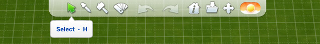Al entrar al modo construir en un solar tendremos dos interfaces, la superior y la inferior. Los botones de la superior en orden son:
|
─ Seleccionar (puntero normal) ─ Cuentagotas (para duplicar algún elemento) ─ Demoler (para eliminar objetos y estructuras) ─ Estilo (para cambiar el color o estampado de los muebles) ─ Los botones de Deshacer y Rehacer |
─ Información del solar ─ Guardar en galería ─ Mover (para recolocar habitaciones o incluso la casa entera) ─ Y por último el tiempo (te permite cambiar la iluminacion para observar el solar a diferentes horas del día). |
|---|
Los botones de la inferior en orden son:
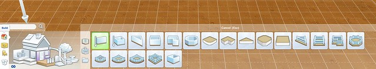|
─ La casa indica el menú de estructuras. La interfaz es simple pues del dibujo solo debes darle click a lo que quieras colocar (ejemplo, si le haces click al arbol te saldrán las plantas). Se pueden construir paredes, habitaciones, sótanos, semimuros, escaleras, columnas, techos, ventanas, plataformas a desnivel, piscinas, fuentes, vallas, caminos, cimientos, chimeneas, modificar el terreno e incluso insertar habitaciones ya hechas por otros jugadores. ─ La habitación indica objetos ordenados por habitaciones. Están Cocina, Dormitorio, Baño, Salón, Comedor, Estudio, Infantil y Exterior. También es una interfaz en forma de dibujo que cambia dependiendo de la que escojas. ─ El icono de la caja indica el inventario de la familia, es decir, los objetos que no estén colocados o que hayan sido regalados y aún no se hayan utilizado. |
─ El icono de la silla indica los muebles por función. Este se organiza en una lista desplegable. Las opciones son: |
|---|
Trucos y consejos
En la derecha inferior se encuentran los filtros, puedes usarlos para buscar muebles de un estilo, color o DLC específico.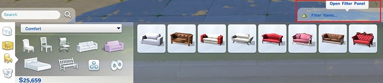 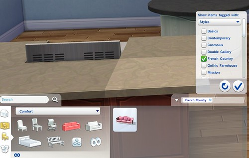 |
Lo mismo puedes hacer con el buscador a la izquierda, pero con palabras específicas.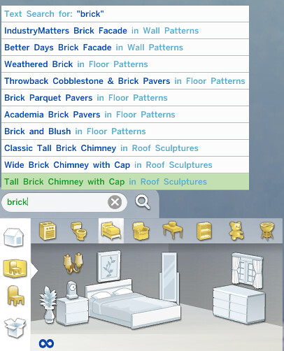 |
|---|
Cuando coloques encimeras o armaritos de pared, puedes desactivar el automatizador para poder elegir la parte específica que quieres colocar.
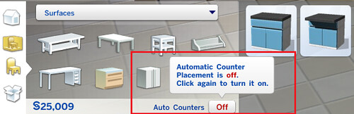 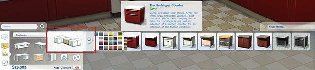Los tejados o habitaciones que tienen una flecha significa que están en diagonal, ten cuidado pues es dificil que quede bien si una de las dos partes no es diagonal.
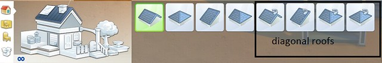Los circulitos de los tejados sirven para cambiar su forma, si buscas hacer tejados más orientales esta funcion te encantará. Arrastralos hacia afuera o hacia adentro para cambiar la pendiente recta en una curva.
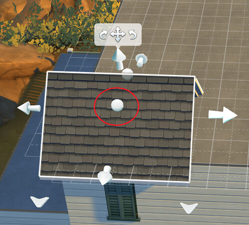
Si lo ensanchas hacia dentro su forma será como la de un templo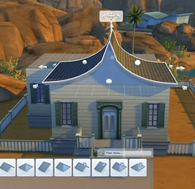 |
Si lo ensanchas hacia fuera su forma será como la de una granja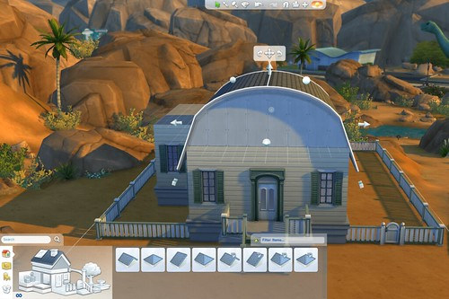 |
|---|